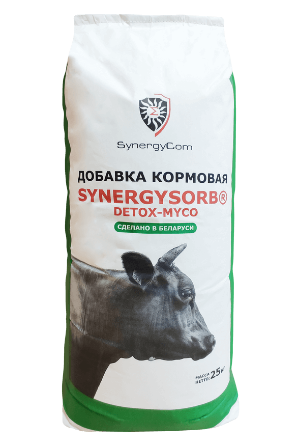
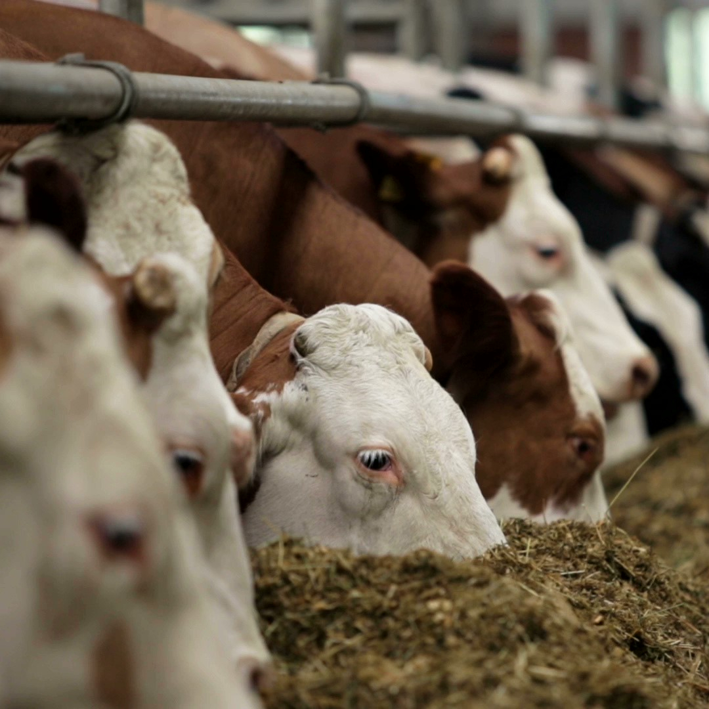
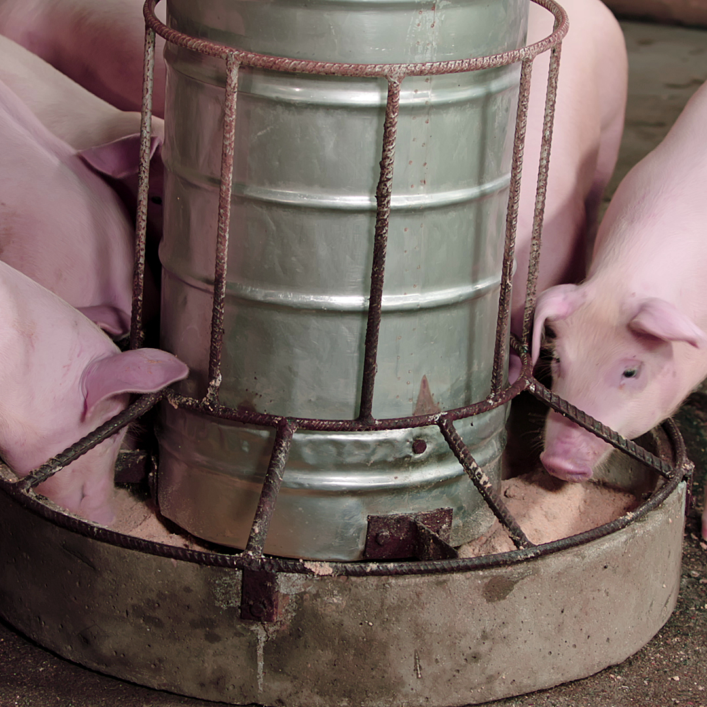
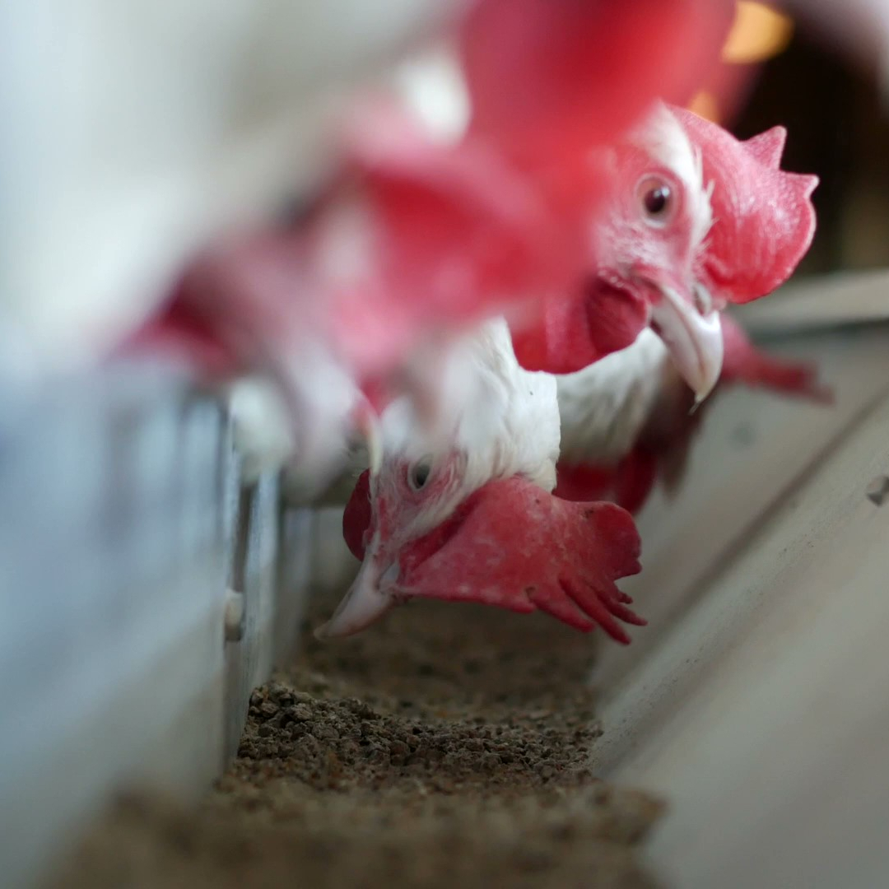

ПРЕБИОТИК
АНТИОКСИДАНТ
ЗАКРЕПИТЕЛЬ ГРАНУЛ
АДСОРБЕНТ МИКОТОКСИНОВ
ИСТОЧНИК НЕРАСТВОРИМЫХ ВОЛОКОН

Добавка кормовая
SynergySorb® Detox-myco
Обладает следующими преимуществами:
Стимулирует рост полезной микрофлоры (бифидобактерий, лактобактерий), способствует улучшению усвояемости питательных и биологически активных веществ, протеинов.
за счет торможения процесса окислительной порчи липидов и жирорастворимых витаминов.
По таким параметрам как прочность, крошимость, разбухаемость, водостойкость.
внутрикишечного содержимого, исключая их негативное воздействие на организм, тем самым снижая нагрузку на печень. Таким образом оказывает положительное действие на иммунную систему.
(функциональных волокон), оптимизирует процесс пищеварения и увеличивает перевариваемость корма.

Крупный рогатый скот

Свиньи
